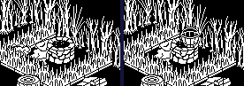
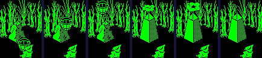
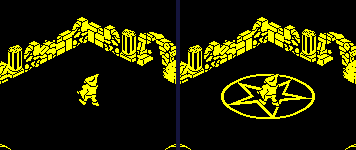
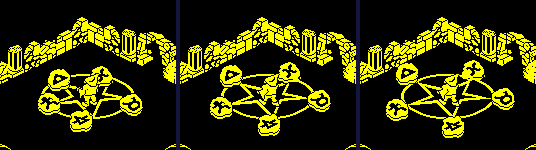
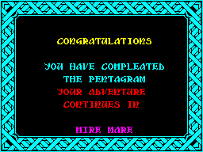
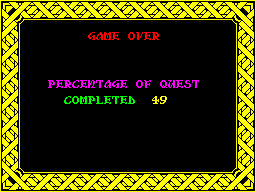

| The well, the bucket and the pentagram |
Pentagram's quest is a chain, each link an update routine acting on the next thing: shoot the well until it gives a bucket; carry the bucket to each of four rough stones, where it flies to the stone and finishes it; with all four finished the pentagram appears in room 82; bring the five collectables there, and each glides to its place on it; the fifth ends the game. This page follows the chain through the code, and then through the game itself, played in a simulator the way the build plays it.
None of these is in the room data. They live in 18 records of 16 bytes at QUEST_RECORDS -- an object record's first half, with its room at +8 -- copied from QUEST_START at every new game by NEW_QUEST. QUEST_OUT_OF_ROOM copies each one in the room being left back to its record, by graphic, and QUEST_INTO_ROOM copies those in the room being entered into free object records, so a thing stays wherever it was left. The records as a game starts:
| Record | What | Graphic | Its sprite | Where |
|---|---|---|---|---|
| 0 | quest item | 112 → 116 | → | room 122 at (80, 160, 128) |
| 1 | quest item | 113 → 117 |  → →  | room 128 at (112, 160, 128) |
| 2 | quest item | 114 → 118 |  → →  | room 17 at (132, 160, 128) |
| 3 | quest item | 115 → 119 |  → →  | room 33 at (160, 160, 128) |
| 4 | collectable | 148 → 156 | placed at random at each new game (below) | |
| 5 | collectable | 147 → 155 | placed at random at each new game (below) | |
| 6 | collectable | 146 → 154 | placed at random at each new game (below) | |
| 7 | collectable | 145 → 153 | placed at random at each new game (below) | |
| 8 | collectable | 144 → 152 | → | placed at random at each new game (below) |
| 9 | piece of the pentagram | 128 | room 82 at (96, 128, 127) | |
| 10 | piece of the pentagram | 129 | room 82 at (108, 140, 127) | |
| 11 | piece of the pentagram | 130 | room 82 at (120, 152, 127) | |
| 12 | piece of the pentagram | 131 | room 82 at (132, 164, 127) | |
| 13 | piece of the pentagram | 132 | room 82 at (120, 104, 127) | |
| 14 | piece of the pentagram | 133 | room 82 at (132, 116, 127) | |
| 15 | piece of the pentagram | 134 | room 82 at (144, 128, 127) | |
| 16 | piece of the pentagram | 135 | room 82 at (156, 140, 127) | |
| 17 | the bucket | 0 until the well gives one |
The block holds 19 records' worth, 304 bytes; the last nothing reads or writes. The collectables start at five neighbouring places of the twenty at SPOTS, the first picked by the random number (AND $3C, so one of the first sixteen):
| Place | Room | U | V | Z | Used |
|---|---|---|---|---|---|
| 0 | 120 | 184 | 72 | 128 | first or later |
| 1 | 37 | 72 | 72 | 164 | first or later |
| 2 | 62 | 120 | 184 | 128 | first or later |
| 3 | 112 | 184 | 184 | 129 | first or later |
| 4 | 108 | 120 | 184 | 152 | first or later |
| 5 | 0 | 104 | 120 | 152 | first or later |
| 6 | 69 | 184 | 184 | 128 | first or later |
| 7 | 142 | 72 | 152 | 176 | first or later |
| 8 | 78 | 128 | 128 | 129 | first or later |
| 9 | 15 | 120 | 72 | 164 | first or later |
| 10 | 42 | 120 | 120 | 176 | first or later |
| 11 | 5 | 104 | 120 | 164 | first or later |
| 12 | 141 | 120 | 104 | 176 | first or later |
| 13 | 70 | 128 | 128 | 128 | first or later |
| 14 | 4 | 184 | 120 | 176 | first or later |
| 15 | 16 | 72 | 120 | 176 | first or later |
| 16 | 129 | 168 | 72 | 129 | only as a later one |
| 17 | 18 | 88 | 88 | 176 | only as a later one |
| 18 | 146 | 168 | 152 | 176 | only as a later one |
| 19 | 27 | 72 | 120 | 176 | only as a later one |
Every turn, WELL asks BOLT_TOUCHING whether a bolt is within two units of it, with the bolts' own hit test (BOLT_HIT), and if one is adds one to a count in its +$14. On the 32nd it makes the bucket: a copy of its own record, graphic 90, at the well's U and 8 further in V, 141 up, and BUCKET_OUT set -- none while a bucket is out, or in the room, or with no free record. The count lives in the well's own record, and the room builder makes that afresh every time the room is entered, so the 32 must all come in one visit. A bolt touches the well for several turns as it goes by and puffs against it, so it takes a volley aimed the right way, not 32 shots. The two bolt records are not tested alike: the first is taken into BOLT_HIT's test past its check for a puff, so its puff goes on counting as touching; the second's does not.
Played in room 71 (a well with no monsters), standing at (120, 148) inside its ring of hazards, firing twelve times a volley and turning a quarter between volleys, as the build's session does. The well's count and the bucket, volley by volley:
| Volley | The count after each shot, until the bucket | Bucket out | Turns it took |
|---|---|---|---|
| 1 | 0, 0, 0, 0, 0, 0, 0, 0, 0, 0, 0, 0 | no | 37 |
| 2 | 0, 0, 0, 0, 0, 0, 0, 0, 0, 0, 0, 0 | no | 40 |
| 3 | 0, 0, 0, 0, 0, 0, 0, 0, 0, 0, 0, 0 | no | 48 |
| 4 | 5, 9, 13, 18, 19, 23, 28, 28 | yes | 49 |
Each shot that reached the well added 1 to 5 turns of contact; the count stood at 28 at the last shot before the bucket, and on the turn it reached 32 the bucket came and the count went back to 0. The volleys that added nothing were fired while he faced away from it.

Firing at the well, and the bucket just out. Pictures from the game's own screen in the simulator.
Carried (the pick-up key, TAKE_OR_LEAVE), the bucket goes in the carried slots; put down, it is an object again. Each turn, until it has a target, it falls a unit and looks for a stone not yet finished (graphics 112 to 115) among the room's records; found, it takes the stone's U and V as its target, and from then on rises a unit a turn up to Z 176 while HEAD_FOR_TARGET steers it a unit a turn towards the target, without falling. When it can move no more -- over the stone at the top of its rise -- it sets bit 0 of the stone's +$16, clears BUCKET_OUT so the well may give another, plays the quest tune, empties its own quest record and turns into a puff. The stone, on its next update, is finished.
Room 122, from the moment the bucket is put down, turn by turn (some of the turns):
| Turns after | The bucket | The stone | QUEST_DONE | Lives |
|---|---|---|---|---|
| 0 | the bucket at (109, 147, 137) | graphic 112 | 0 | 5 |
| 7 | the bucket at (102, 154, 144) | graphic 112 | 0 | 5 |
| 15 | the bucket at (94, 160, 152) | graphic 112 | 0 | 5 |
| 19 | the bucket at (93, 160, 156) | graphic 112 | 0 | 5 |
| 23 | the bucket at (92, 160, 160) | graphic 112 | 0 | 5 |
| 31 | the bucket at (84, 160, 168) | graphic 112 | 0 | 5 |
| 39 | the bucket at (80, 160, 176) | graphic 112 | 0 | 5 |
| 41 | a puff at (80, 160, 176) | graphic 116 | 1 | 6 |
| 44 | a puff at (80, 160, 176) | graphic 116 | 1 | 6 |
| 51 | gone | graphic 116 | 1 | 6 |

The bucket put down, rising and flying to the stone, over it, the puff, and the finished pillar (turns 0, 19, 39, 41, 44, 51). Lives went from 5 to 6: a quest item gives a life. Each picture is the screen as a turn began.
It rose a unit a turn from Z 137 to 176 while it steered, and was over the stone 39 turns after it was put down.
With the fourth stone finished, ALL_FOUR_DONE finds all four quest records at 116 to 119, and sets PENTAGRAM_ON. The pieces' quest records have been in room 82 all along; QUEST_INTO_ROOM simply leaves them out until then. From then on nothing falls from the sky in room 82 either, since the pieces are among what bans a drop there (BAN_DROPS).

Room 82 as the game drew it at the start of this run, and after the fourth quest item.
A collectable is otherwise an ordinary thing that falls and can be pushed or carried. In room 82 with the pentagram showing, COLLECTABLE takes its place from TARGETS by the low three bits of its graphic and glides there a unit a turn in U and in V, without falling:
| Graphic | Sprite | U | V | Becomes |
|---|---|---|---|---|
| 144 | 112 | 176 | 152 | |
| 145 | 156 | 162 | 153 | |
| 146 | 162 | 106 | 154 | |
| 147 | 114 | 92 | 155 | |
| 148 | 80 | 136 | 156 |
The build's session stages this last part: the five collectables are put on the floor of room 82, sixteen units short of their places, and the room entered again. Being the same distance from their places, they arrived together: PLACED went from 0 to 5 within one round of updates, the fifth jumping to the win from inside it.

The collectables gliding to their places on the pentagram.
When PLACED reaches 5, COLLECTABLE jumps straight to WON, from inside the main loop's round of updates: the buffer cleared, the screen's colours bright cyan, six lines of text each in its own colour (CONGRATULATIONS... YOUR ADVENTURE CONTINUES IN MIRE MARE, from WON_CONGRATULATIONS), the border, the screen shown, the winning tune. Then it runs on into the game-over screen, GAME_OVER, with the percentage, and after about four seconds back to the menu. Winning is a game over with a different first screen.


The two screens as the game showed them at the end of this run: it printed 49 per cent.
PERCENTAGE adds three things: the rooms seen (a bit each in the 31 bytes at ROOMS_SEEN, set by MARK_ROOM_SEEN as each is built) halved, up to 54; 4 for each quest item done, 16 in all; 6 for each collectable placed, 30 in all. 54, 16 and 30 make 100. The sum is turned into BCD by counting: a DJNZ loop adding 1 with DAA, B times. With B = 0 a DJNZ loop runs 256 times, and 256 counted in BCD leaves 56 in the last two digits. So a player who has seen no more than one room and done nothing else is told 56 per cent -- anyone who loses all five lives in the room they started in (one of the bugs). Run on its own for a few sums:
| Rooms seen | Quest items | Collectables | The sum | Printed |
|---|---|---|---|---|
| 0 | 0 | 0 | 0 | 56 |
| 1 | 0 | 0 | 0 | 56 |
| 2 | 0 | 0 | 1 | 01 |
| 3 | 0 | 0 | 1 | 01 |
| 20 | 1 | 1 | 20 | 20 |
| 60 | 2 | 0 | 38 | 38 |
| 107 | 4 | 5 | 99 | 99 |
| 108 | 4 | 5 | 100 | 100 |
| 139 | 4 | 5 | 100 | 100 |
This run printed 49: it had seen 7 rooms (3), done 4 quest items and placed 5 collectables. The staged session reaches rooms by restarting in them, not by walking, which is why it has seen so few.
Things fall from the sky (see the creatures) when DROP_TIMER runs out. RESET_DROP_TIMER, run at every room's start and after every drop, is written to count the quest items still to do and allow four turns for each, plus eight: 24 turns with all four to do, down to 8. But it loads the record length into DE and never adds it to HL, so it tests the first record eighteen times: the answer is 80 while the first quest item is to do, and 8 once it is done, whatever the others are (another of the bugs). Run on its own:
| Quest items done (1 is room 122's) | Meant | Set |
|---|---|---|
| none | 24 | 80 |
| 1 | 20 | 8 |
| 2 | 20 | 80 |
| 2, 3, 4 | 12 | 80 |
| 1, 2 | 16 | 8 |
| 1, 2, 3, 4 | 8 | 8 |